1. Primeiro: Excel
O Cronograma Rony é o quadro de planejamento. Nele o CS define quem será trabalhado, por qual motivo e em qual período.
Fluxograma operacional atualizado
Guia completo para executar o AE começando pelo Excel / Cronograma Rony, passando pela priorização, agendamento, preparação, visita, registro no Sankhya e acompanhamento. A leitura foi escrita para uma pessoa que nunca fez o processo conseguir entender o que fazer.
Todo cliente no cronograma precisa ter objetivo/campanha, início, fim, status, motivo e classificação.
O fechamento do AE acontece na tela CS Acompanhamento Evolutivo (Novo), com Plano de Ação, anexos e conclusão.
Leia as seções visuais e clique nos blocos do fluxograma para abrir o passo a passo de cada etapa.
O Cronograma Rony é o quadro de planejamento. Nele o CS define quem será trabalhado, por qual motivo e em qual período.
Com cliente priorizado, o CS agenda, prepara o contexto no Sankhya e conduz o AE com foco em dor, evolução e plano de ação.
AE só deve ser considerado realizado quando houver registro, anexos, e-mail formalizado e conclusão marcada.
Etapa 1
Antes de abrir qualquer tela do Sankhya, o CS deve consultar a planilha AE ABC Paulista, aba Cronograma Rony. Essa aba funciona como o quadro de planejamento do AE.
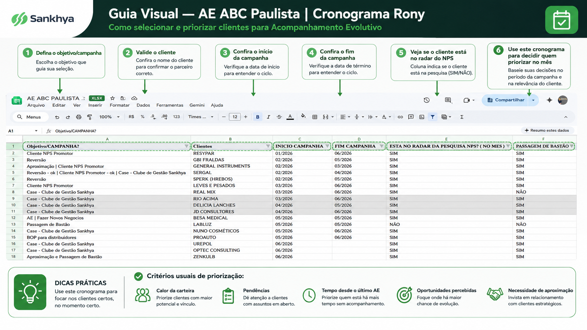
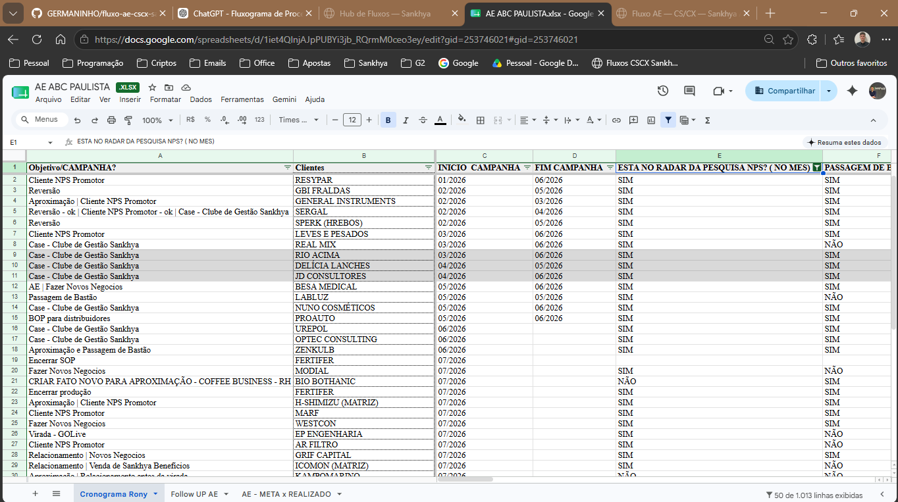
Excel
Use este dicionário para entender o que cada coluna significa e como ela deve ser preenchida. O objetivo é evitar interpretações diferentes entre pessoas do time.
| Coluna | Campo | Obrigatório? | Como explicar para alguém novo |
|---|---|---|---|
| A | Objetivo/CAMPANHA? | Sim | Motivo macro pelo qual o cliente entrou no cronograma. Ex.: Reversão, Cliente NPS Promotor, Case, Passagem de Bastão, AE. |
| B | Clientes | Sim | Nome do cliente/parceiro que será avaliado, acionado ou visitado. |
| C | INICIO CAMPANHA | Sim | Mês em que o cliente começa a ser trabalhado naquela campanha. |
| D | FIM CAMPANHA | Sim | Mês limite para finalizar, visitar, reavaliar ou concluir a campanha. |
| E | ESTÁ NO RADAR DA PESQUISA NPS? | Informativa | Coluna de apoio. Indica se o cliente está no radar de NPS no mês. Não trava a execução do AE. |
| F | PASSAGEM DE BASTÃO | Quando aplicável | Indica se houve o rito de passagem da implantação para a base. Não é a mesma coisa que a campanha "Passagem de Bastão". |
| G | Status | Sim | Status da campanha/ação: normalmente EM ANDAMENTO ou CONCLUÍDO. |
| H | Endereço | Quando houver visita presencial | Endereço do cliente para planejamento logístico da visita. |
| I | Motivo | Sim | Explicação prática do porquê o cliente será visitado. Deve estar ligado ao objetivo/campanha. |
| J | Classificação | Sim | Segmentação do cliente: Enterprise, Premium, Advocacy, Growth ou Digital. Ajuda a definir a abordagem. |
| K | AÇÃO / PRÓXIMOS PASSOS | Após visita/contato | Registro do que ficou combinado depois do AE, com ação, responsável e prazo. |
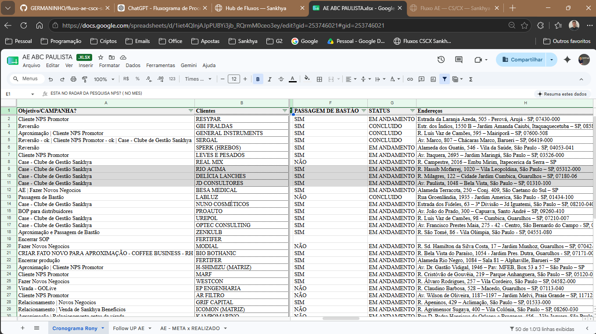
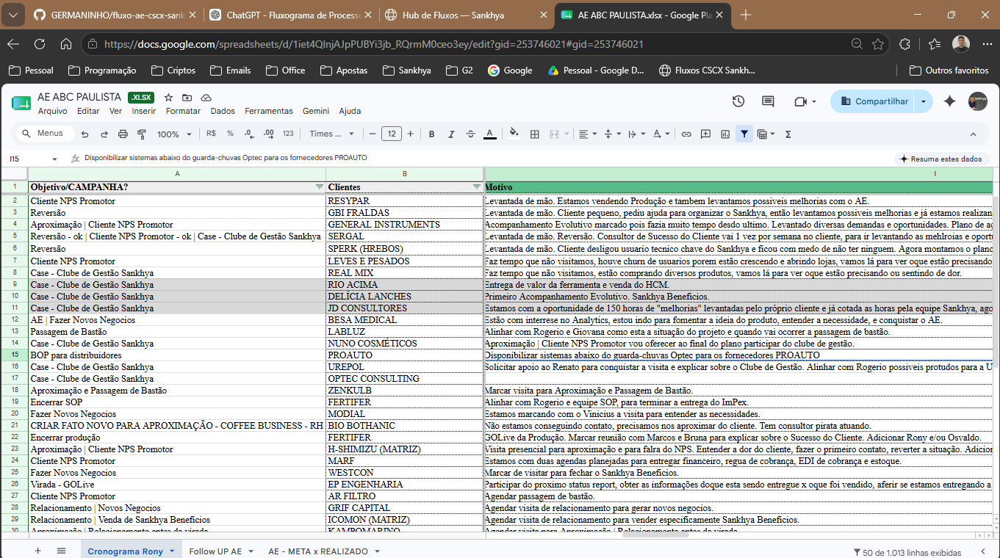
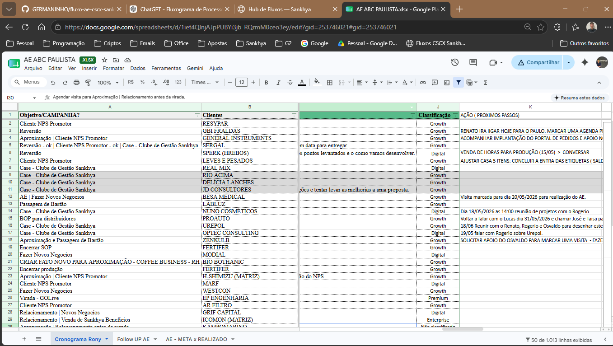
Objetivo e motivo
O Objetivo/Campanha é o motivo macro. O Motivo é a explicação prática. Um cliente pode ter mais de uma campanha, mas o texto precisa ficar claro para qualquer pessoa entender.
| Campanha | Quando usar | Exemplo de motivo bem escrito |
|---|---|---|
| Cliente NPS Promotor | Cliente demonstrou satisfação e pode ser aproximado para relacionamento, case ou indicação. | Cliente com NPS positivo. Vamos aproximar o relacionamento, entender percepção de valor e avaliar possibilidade de case ou Clube de Gestão. |
| Reversão | Cliente apresenta risco, ruído, baixa satisfação, baixa adoção ou necessidade de recuperação. | Cliente precisa de aproximação para entender dores, organizar prioridades e criar plano de ação para recuperação da relação. |
| Aproximação | Cliente está distante, sem contato recente ou com necessidade de relacionamento. | Cliente sem visita recente. A ação busca retomar relacionamento, entender momento atual e mapear oportunidades de evolução. |
| Case - Clube de Gestão | Cliente tem bom cenário para prova social, evolução de gestão ou participação em iniciativa de valor. | Cliente possui contexto favorável para apresentar Clube de Gestão e validar aderência para construção de case. |
| Fazer Novos Negócios | Existe oportunidade percebida para expansão, cross-sell, upsell ou venda de solução complementar. | Cliente possui oportunidade de evolução no uso e possível aderência a novas soluções. A visita busca validar necessidade e próximos passos. |
| Passagem de Bastão | Cliente saiu da implantação e precisa ser recebido pela base com rito de transição. | Cliente em transição da implantação para a base. O AE busca entender pendências, alinhar responsáveis e consolidar próximos passos. |
| AE | Cliente entrou no ciclo formal de Acompanhamento Evolutivo. | Cliente selecionado para AE com foco em entender uso, dores, oportunidades e montar plano de ação. |
Cliente selecionado para Reversão porque teve baixa proximidade nos últimos meses e existem dúvidas sobre o uso do sistema. O AE busca entender as dores, levantar melhorias e construir um plano de ação.
20/05/2026 — Realizar AE com o cliente e validar pontos de melhoria levantados — Gustavo — Retornar com plano de ação até 27/05.
Classificação do cliente
A classificação não é apenas cadastro. Ela direciona o nível de profundidade da conversa, a cadência de acompanhamento e o tipo de oportunidade que o CS deve buscar.
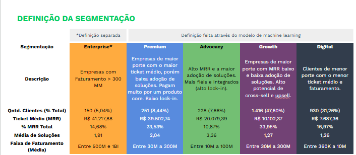
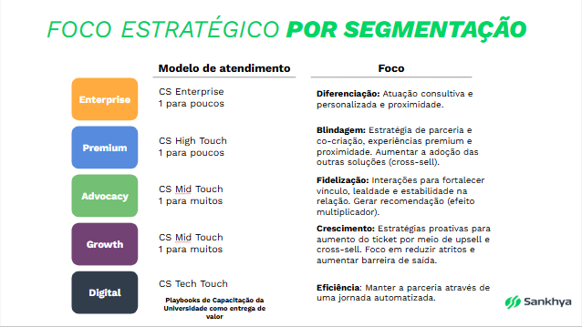
| Classificação | Como interpretar no AE | Abordagem recomendada |
|---|---|---|
| Enterprise | Cliente estratégico, com maior porte e maior relevância de carteira. | Conversa consultiva, executiva e personalizada. Foco em indicador estratégico, mapa de poder, risco e expansão. |
| Premium | Cliente de maior valor, com necessidade de blindagem e proximidade. | Foco em adoção, relacionamento, ampliação de uso, novas soluções e retenção. |
| Advocacy | Cliente com boa aderência e potencial de recomendação ou prova social. | Foco em fidelização, case, Clube de Gestão, recomendação e percepção de valor. |
| Growth | Cliente com potencial de crescimento e aumento de uso. | Foco em crescimento, cross-sell, upsell, adoção de soluções e evolução da jornada. |
| Digital | Cliente menor ou com modelo de atendimento mais escalável. | Pode receber AE, mas não deve ser o foco principal da rotina presencial. A abordagem tende a ser mais objetiva. |
Etapa Sankhya
Depois que o cliente foi planejado no Excel / Cronograma Rony, o CS usa a tela CS - Acompanhamento Evolutivo (Novo) para consultar o cenário do cliente, entender uso, indicadores, processos, histórico e preparar o registro oficial do AE.
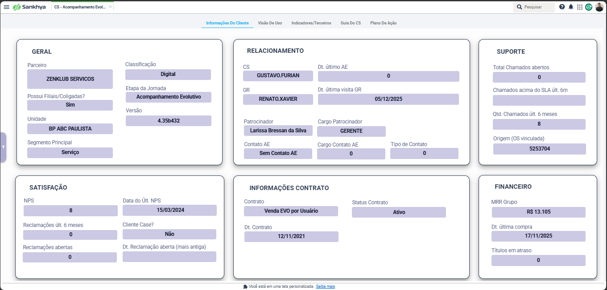
Esta aba deve ser a primeira leitura do CS dentro do Sankhya. Ela funciona como um resumo geral do cliente antes da reunião de AE.
Validar parceiro, classificação, etapa da jornada, unidade, segmento e versão.
Validar CS, GR, última visita, patrocinador, contato AE e responsável de relacionamento.
Ver chamados abertos, chamados acima do SLA, quantidade dos últimos 6 meses e OS vinculada.
Observar NPS, data do último NPS, reclamações abertas e histórico de reclamações.
Validar contrato, status, data do contrato e modelo contratado pelo cliente.
Ver MRR, última compra e títulos em atraso antes de avançar para a abordagem.
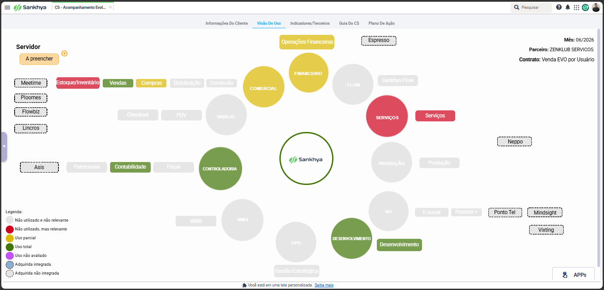
A Visão de Uso ajuda o CS a entender o que o cliente usa bem, o que usa parcialmente, o que não usa e o que pode virar oportunidade de evolução.
| Legenda / Situação | Como interpretar no AE |
|---|---|
| Uso total | Processo aderente e usado pelo cliente. Pode ser reforçado como valor entregue. |
| Uso parcial | Existe uso, mas há espaço para evolução, treinamento, ajuste de processo ou plano de ação. |
| Não utilizado, mas relevante | Oportunidade clara para o AE. Deve ser avaliado como possível pauta da visita. |
| Não utilizado e não relevante | Não precisa ser priorizado no momento, salvo mudança de contexto do cliente. |
| Uso não avaliado | Ponto que ainda precisa ser validado com o cliente ou revisado pelo CS. |
| Adquirida integrada / não integrada | Indica relação com soluções adquiridas e possível impacto na operação do cliente. |
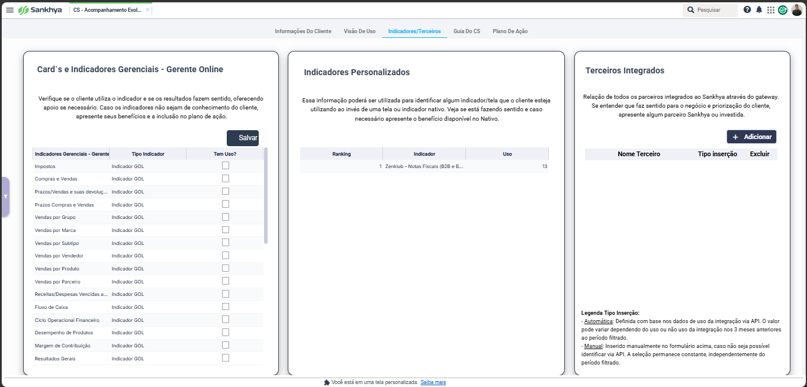
Esta aba mostra se o cliente usa indicadores, cards gerenciais e integrações. Ela ajuda a entender se o cliente está usando informação gerencial para apoiar a operação e a tomada de decisão.
Verificar se o cliente usa indicadores do Gerente Online e se eles fazem sentido para a gestão.
Observar indicadores, telas ou visões personalizadas que precisam ser consideradas na conversa.
Validar integrações, parceiros conectados e possíveis impactos em processos do AE.
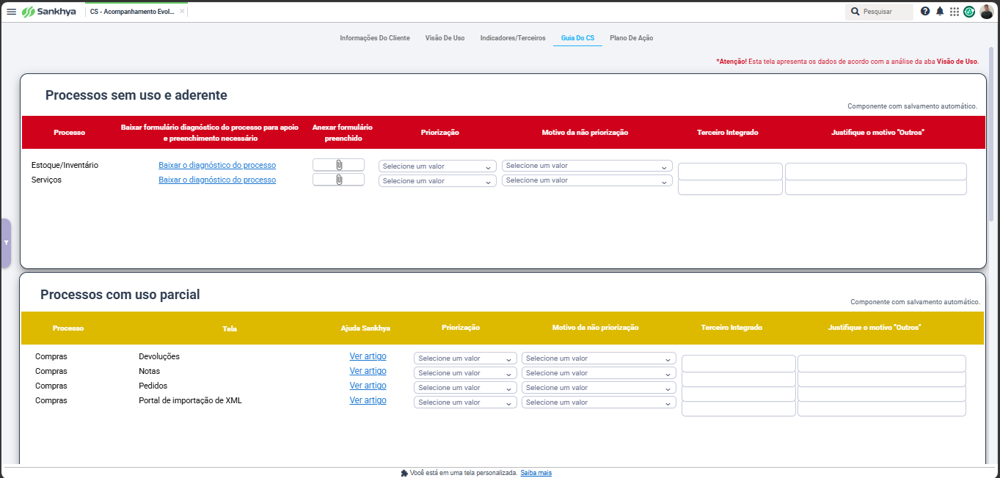
A Guia do CS é uma das etapas mais importantes do processo. É nela que o CS decide o que será priorizado, o que não será priorizado e quais pontos devem alimentar o Plano de Ação.
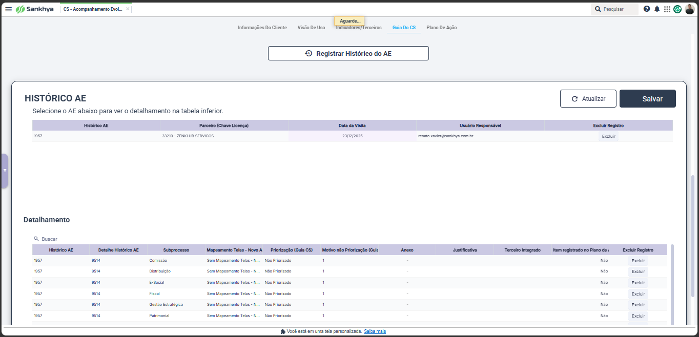
O histórico registra o diagnóstico feito na Guia do CS. Ele mostra os processos avaliados, a priorização, os motivos, anexos, justificativas, terceiros integrados e se o item foi registrado no Plano de Ação.
Clique em cada etapa para abrir o passo a passo. O fluxo começa no Excel e termina no registro oficial do AE.
Sankhya
Depois de preencher a Guia do CS e registrar o histórico, o CS deve ir para a aba Plano de Ação. Esta etapa transforma a visita em registro oficial, com ações, evidências e conclusão do AE.
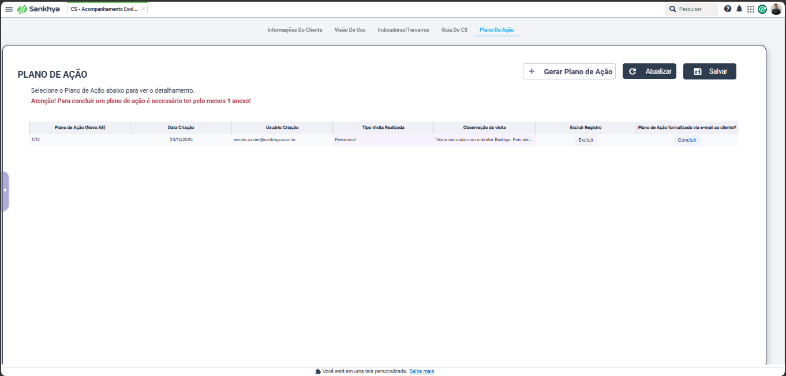
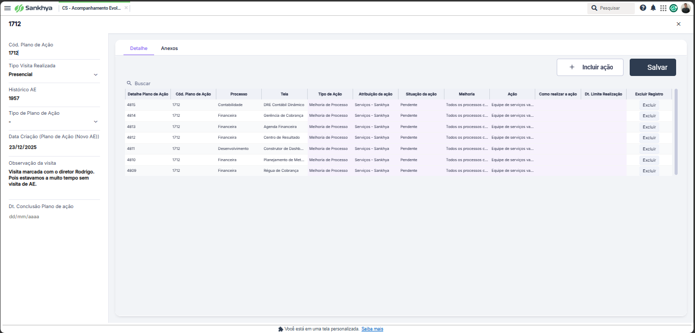
Ao abrir o plano gerado, o CS deve validar as informações principais do registro.
| Campo / Área | Como tratar no fluxo |
|---|---|
| Código do Plano de Ação | Usar como referência do registro criado no Sankhya. |
| Tipo Visita Realizada | Usar Presencial como padrão operacional documentado para este fluxo. |
| Histórico AE | Deve estar ligado ao diagnóstico registrado na Guia do CS. |
| Tipo de Plano de Ação | É gerado com base no preenchimento da Guia do CS. |
| Observação da visita | Descrever de forma objetiva o contexto da visita e o que foi levantado. |
| Ações | Revisar processo, tela, tipo de ação, melhoria, ação proposta, responsável e prazo. |
As ações devem transformar o que foi conversado no AE em tarefas claras e acompanháveis. Uma boa ação precisa deixar claro o que será feito, por quem, por que será feito e até quando.
Processo, tela, tipo de ação, atribuição da ação, situação, melhoria, ação, como realizar e data limite.
Garantir que o Plano de Ação não seja só um registro, mas sim um roteiro executável de evolução para o cliente.
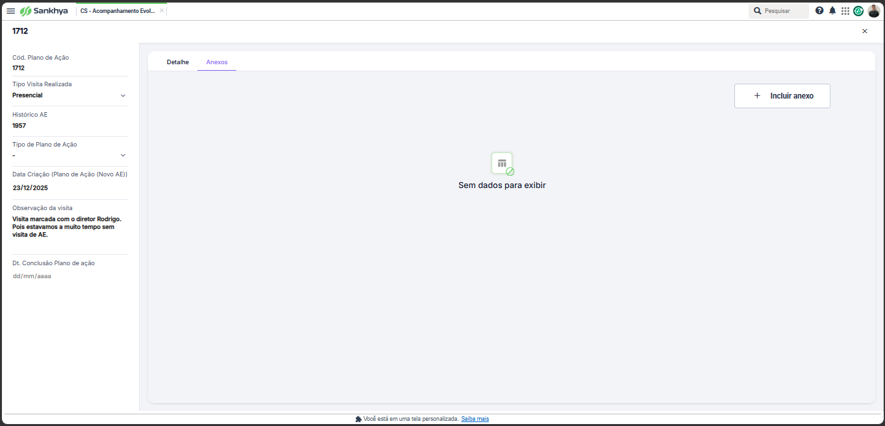
No padrão operacional da ABC, existem dois Excels diferentes no fechamento do AE. Eles não têm a mesma função e ambos precisam ser considerados antes de concluir o Plano de Ação.
| Anexo / Evidência | Função no processo | Quando usar |
|---|---|---|
| Excel padrão Sankhya Matriz — Plano de Ação | É o arquivo padrão da Matriz usado para estruturar o Plano de Ação do AE conforme o levantamento feito na tela CS - Acompanhamento Evolutivo (Novo). | Deve ser preenchido com base no diagnóstico do AE e anexado como evidência oficial do Plano de Ação. |
| Excel interno de levantamento / pendências | É o Excel preenchido à parte pelo CS para controlar anotações, pendências, combinados, pontos levantados e acompanhamento operacional. | Deve ser usado quando o AE gerar itens de acompanhamento conectados ao Fluxo de Pendências, FUP ou tratativas internas da unidade. |
| PDF do e-mail enviado ao cliente | É a evidência da formalização enviada ao cliente com resumo, combinados e próximos passos. | Deve ser anexado após o envio do e-mail de devolutiva/formalização do AE. |
A conclusão é feita pelo botão Concluir na lista do Plano de Ação. Antes de concluir, revise o checklist abaixo.
| Checklist antes de concluir | Conferência |
|---|---|
| Plano gerado | O botão Gerar Plano de Ação foi usado e o registro foi criado. |
| Guia do CS preenchida | Os processos foram avaliados e priorizados antes da geração do plano. |
| Histórico AE registrado | O diagnóstico está gravado no histórico. |
| Ações revisadas | As ações possuem clareza sobre processo, melhoria, ação e prazo. |
| Excel padrão Sankhya Matriz anexado | O Excel padrão do Plano de Ação foi preenchido com base no diagnóstico do AE e anexado como evidência oficial. |
| Excel interno / pendências anexado | O Excel preenchido à parte pelo CS, usado para levantamento, pendências, FUP e acompanhamento operacional, foi anexado quando houver itens de pendência ou tratativa interna. |
| PDF do e-mail anexado | A formalização enviada ao cliente foi anexada. |
| Cliente formalizado | O cliente recebeu o e-mail com resumo, combinados e próximos passos. |
Boas práticas
| Erro | Por que atrapalha | Como corrigir |
|---|---|---|
| Cliente sem objetivo/campanha | Ninguém entende por que ele foi selecionado. | Preencher a campanha antes de avançar para agenda. |
| Campanha sem início e fim | A ação fica sem prazo e pode se perder. | Definir mês de início e mês limite de conclusão. |
| Motivo genérico demais | Não ajuda o CS a conduzir a conversa. | Explicar o contexto e o resultado esperado. |
| Motivo sem relação com objetivo | Gera confusão na priorização. | Revisar se o motivo conversa com a campanha selecionada. |
| Status concluído sem próximos passos | Parece que a ação terminou, mas não existe histórico. | Registrar o combinado pós-visita antes de concluir. |
| Confundir Passagem de Bastão como coluna e como campanha | Uma coisa é o motivo da campanha; outra é se o rito ocorreu. | Usar campanha para intenção e coluna para indicar se o rito aconteceu. |
| Registrar AE sem anexos obrigatórios | Perde rastreabilidade, evidência e conexão com o acompanhamento operacional. | Anexar o Excel padrão Sankhya Matriz do Plano de Ação, o Excel interno de levantamento/pendências quando houver acompanhamento operacional e o PDF do e-mail enviado ao cliente. |
Onde: planilha AE ABC Paulista, aba Cronograma Rony.
Organizar quais clientes podem receber AE, por qual motivo e em qual período. Essa etapa evita que o AE seja feito de forma aleatória.
Onde: planilha, histórico do cliente, dashboard CS - Acompanhamento Visita e contato com o cliente.
Decidir quais clientes realmente serão acionados no mês e tentar agenda de AE com base no objetivo da campanha.
Onde: tela CS - Acompanhamento Evolutivo (Novo).
Preparar o AE com dados reais do cliente, validando relacionamento, satisfação, suporte, contrato, financeiro, uso, indicadores, terceiros e processos aderentes.
Onde: na reunião presencial ou remota com o cliente.
Realizar a conversa de AE, entender o momento atual do cliente, validar dores e construir um plano de ação útil.
Onde: aba Plano de Ação da tela CS Acompanhamento Evolutivo (Novo).
Transformar o diagnóstico e a visita em registro oficial, com ações, evidências e conclusão do AE.
Onde: planilha AE ABC Paulista, aba Cronograma Rony, e rotina de acompanhamento do CS.
Atualizar a linha do cliente com o resultado da visita e manter histórico do que ficou combinado.